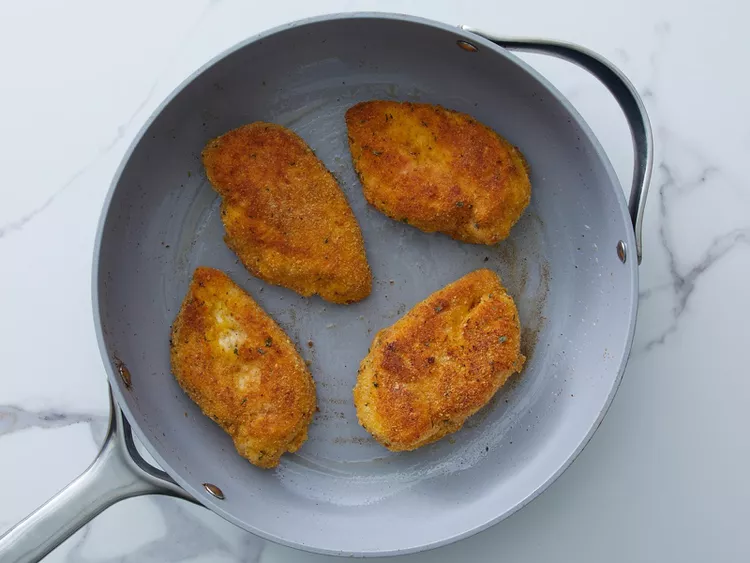

Home
Cutlet

Description
This old-fashioned breaded chicken cutlets recipe is a labor of love, but it is well worth the effort. The cutlets are great served with mashed potatoes and a veggie, and they are also terrific on focaccia bread with mayo, lettuce, tomato, and onion. However you serve them, they will not disappoint!
Ingredients
- 1/2 cup salt
- 1/2 cup white sugar
- 4 ounce boneless skinless chicken breasts
- 8 slices crustless bread
<1i>1/4 cup dried parsley
- 3/4 cup all-purpose flour
<1i>2 large eggs
- 3/4 cup olive oil
- salt and ground pepper to taste
Steps
- Preheat the oven to 400deg F.
- Dissolve 1/2 cup salt and 1/2 cup sugar in water. Place chicken in the solution and refrigerate for 30 min.
- Pat chicken dry; place on a paper towel lined baking sheet and air-dry for 10 minutes.
- Place bread in a blender or a the bowl of a food processor. Blend until crumbly, about 30 seconds.
- Place flour in a second shallow dish. Beat eggs and 1tbsp olive oil in a third shallow dish.
- Season chicken cutlets with salt and pepper. Dredge in flour; shake off excess. Drop into egg mixture. Press into bread crumb mixture to coat evenly on both sides. Place breaded cutlets, unstacked, onto a plate.
- Heat remaining oil in a nonstick skillet over medium heat. Add 2 cutlets; cook until outsides are golden brown, no longer pink in centers, and juices run clear, 2 to 3 minutes per side. Transfer to the warmed plate. Repeat with remaining cutlets.